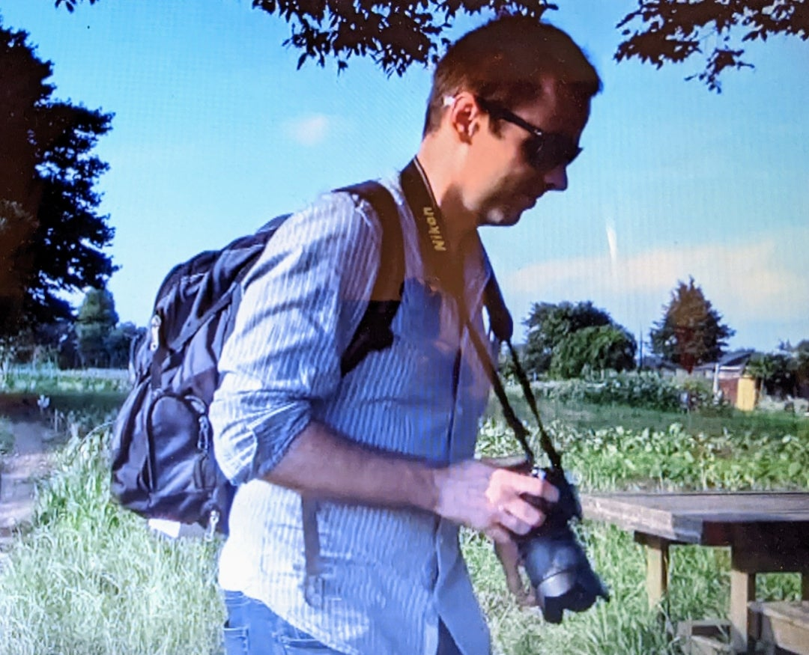

ダスティン・ライトが追う 島田清作とデニス・バンクスの「砂川闘争」後 （１）
2022年5月30日に本ブログで紹介したように
ダスティン・ライトは
「砂川闘争」および日本の反基地運動を研究し続けている
アメリカの研究者です。
アメリカ人研究者がJapan Timesに書いた「砂川闘争」

{kind=link}
{kind=link}
彼が2017年にThe Sixties に発表した論文「東京からウンデッドニーへ――二人の「砂川闘争」後」の全訳を ３回にわたって掲載します。
Dustin Wright (2017): From Tokyo to Wounded Knee: Two Afterlives of the Sunagawa Struggle,
The Sixties, A Journal of History, Politics and Culture
全体の要旨
西東京の郊外で起きた大規模な米軍基地反対運動「砂川闘争」は、日米安保同盟だけでなく、抗議ラインのどちらの側の人間にも、後々まで多大な影響を及ぼした。本稿では、日本における反基地運動の経験によって大きく変化した二人の人生を追う。基地警備の任務についた航空兵であり後に北米インディアン公民権運動AIMの創設を手伝ったデニス・バンクスと、砂川闘争を闘い立川市議会議員としてのキャリアをかけて反基地運動に身を投じた島田清作である。
東京からウンデッドニーへ――二人の「砂川闘争」後
デニス・バンクスと島田清作
1956年10月のある日、朝の3時に、デニス・バンクスと若いアメリカ人航空兵数十名は、横田基地にある兵舎の寝床から起こされて、バスに乗せられ、東に8キロの立川基地まで運ばれた。ライフル銃を渡されると、基地の北端にあるメイン滑走路の警備にあたるように言われた。フェンスの向こう側では、反対運動をする何千もの日本人がバンクスらと向き合っていた。その日本人たちが何者なのかは知らされず、何に憤っているのかもわからなかった。ただし、フェンスのこちら側に来る者がいたら撃ち殺せということは告げられていた。何十年か後に思い起こせば、それは、読経の唱和や太鼓を打ち鳴らす不協音につつまれ、尼僧や僧侶たちの団体から支援されていた平和的な抗議活動だった。
そんな人たちの反対側に立っていました。我々はM-16自動小銃を持ち
軍曹は弾薬の詰まったブローニングM1918自動小銃（BAR）を抱えて。
すると突然 右の方で騒動が起こりました。
それから金切り声や叫び声が始まって だんだんこちらに近づいてきました。
学生たちがフェンスに向かって動くのが見えましたが、そのとき急に
警官が武器と重そうな棒で身構えたんです。
僧侶と尼僧たちは我々の前の地面に座ったまま唱え続けている
そんなときに警官は狂ったように彼らめがけて突進して
まるでココナツの実でも叩き割るかのような恐ろしい音で
彼らの頭を殴り始めました。
当時はよくわからなかったが、バンクスは、後に「砂川闘争」として知られ米軍基地反対運動の礎となった運動を、目撃していたのである。その後の数年間で、砂川の抵抗運動は、東アジアにおける米国の冷戦政策の、その根底を成す日米安保条約を、脅かすまでになる。
1950年代半ば、米軍は、本部や機関の多くが増々沖縄に移るにつれ、日本の本州にある多くの基地を統合しようとしていた。同時に、巨大な立川基地のような本州のいくつかの基地では、航空機の大型化に対応して滑走路の延長がめざされていた。そのような拡張計画に反対する抗議運動および基地の統合は、日本の国内政治に重要な影響を与えてきた、と理解された。
日本における第二次世界大戦後の社会運動を研究する学者のなかには、1950年代および60年代、そのようにして軍事基地が本州の外に移されたことで「日本の左翼」は勢いをそがれた、と見るむきもあった。「日本の左翼」とは、反基地運動をめぐって周期的に連合してきた幅広い政治上のスペクトルをさす。
吉見俊哉によると、米軍基地が統合されるということは、日々アメリカの軍国主義に接する日本人が少なくなるということで、「日本における「アメリカ」のイメージは、軍事基地と直接出会いそれに関連する暴力の経験や記憶から切り離されることになる」。吉見は「戦後の日本では「二つのアメリカ」が出現した。一つはジャズやファッションのような「欲望」の対象をもたらし、もう一つは、犯罪と汚染と土地の没収をもたらした」と指摘する。
本州の軍事基地反対の歴史は長いが、基地の存在感が最も大きかった1950年代および60年代が焦点化されることが多い。私は、「砂川闘争」のような、戦後初期の基地拡張反対運動の遺産が、その後何十年かの間に起った運動に与えた影響力の大きさを強調したい。
また、「砂川闘争」の影響範囲は日本政治に限定されるものではない、ということも論じる。日本の激しい基地反対運動があって、アメリカにもラディカルな政治空間が生じることになった。そうした運動に参加した人々が体現する「砂川闘争」のその後から、1950年代の日本における反戦と反帝国主義の運動が、太平洋を越えた世界で影響力を増していたことがうかがえる。
本稿では、二人の人物の「砂川闘争」後を追う。一方のその後は、デニス・バンクスの政治的ラディカリズムに明らかである。彼は、アメリカの航空兵として、抗議活動を行う日本人を見つめていたときから10年以上を経て、「アメリカン・インディアン・ムーヴメントAIM」の創設にひと役かった。AIMは、土地に対する主権の返還をめざす運動でもあったといえる。もう一方で、島田清作の行動主義がある。何千という日本の活動家たちが「砂川闘争」の遺産の数々を土地収奪に反対する他の激しい闘いに広めたが、島田もその一人である。
「砂川闘争」は、常に太平洋を越えていた。二人のその後を辿っていくと、このような抵抗運動が日本国内の他の闘争現場で反響をよぶ一方、アメリカ合衆国のラディカルな人権組織の創設メンバーにも衝撃を与えた、といえるのだ。あの1955年の晩春の日、砂川の地元民たちが、自分の農地に及ぶ滑走路の延長に反対すると決意したとき、彼らは、ソウルからワシントンへと広がるアメリカの、大方が盤石だと信じこんでいた環太平洋軍事システムに、波紋を起こしたのである。その概要を以下に説明する。
次に、島田の政治的経歴を追ってみる。彼は何十年もの間、不動の姿勢で軍事基地根絶のために邁進し、自分の地元以外にも、三里塚や沖縄ほか日本列島全土にわたる地域の農民たちの支援を続けてきた。
そして最後に、関東平野のさびれゆく農地から遠く離れたアメリカ中西部へと、「砂川闘争」を追ってみたい。そこではデニス・バンクスが、砂川とは異なる形の国有地に対する抵抗運動を主導する手助けをしていたのである。
（２）へ続く